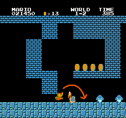
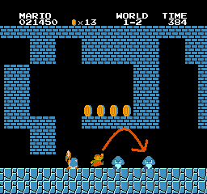
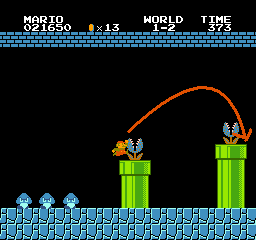
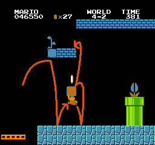
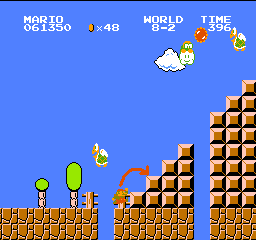
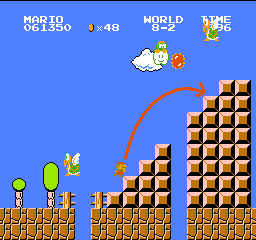
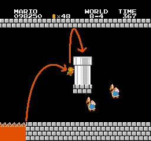
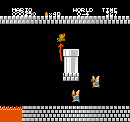

スーパーマリオブラザーズ

スーパーマリオブラザーズについて
- 発売日
-
1985-09-13
- ジャンル
-
アクション
- 値段
-
5145円
- ゲーム紹介
-
横スクロール型アクションゲームを世に広め、社会現象といえるほど大ヒットしたゲーム。ヒゲの主人公「マリオ」を操作し、クッパに捕らえられたピーチ姫を救い出す、というシナリオは誰もが知っているはず。誰でも遊べ、やりこむと奥が深いこのゲームは、世界一売れているゲームソフトとしてギネス記録にもなっている。
スーパーマリオブラザーズ レビュー
全てのマリオの原点といえるであろう。僕もこのゲームが大好きで、結構やりこんでいた。攻略法のセクションで紹介するが、僕も5分8秒で攻略できるぐらいになった。それでもときどき最初のクリボーに当たるんだよなぁ…w。
スーパーマリオブラザーズ 攻略方法
ココでは通常の攻略法ではなく、スーパーマリオブラザーズを「素早くクリアする」ことを目的とした攻略法を紹介する。
スーパーマリオブラザーズのスピードクリアは世界中で挑戦されており、現在の世界記録は 4分59秒60。ただ、この動画はエミュレータを使用しているので、あくまで理論値、参考程度に考えた方が良いだろう。僕も他の動画を参考に練習をした結果、5分8秒を打ち出すことができた。
今回は、このスピードクリアのやり方を説明する。
- 1-1
-
スタート。ここでは4つ目の土管に入り、ボーナスステージを通ってゴール近くまでワープ。
- 1-2
-
地下。ここでの注意ポイントは2箇所。
一つは、高さが1マスの箇所を抜けた跡にいる、ノコノコとクリボー2匹をどう避けるか。もう一つは、その後のクリボー3匹を飛び越えた後にある、パックンが顔を出した土管3つをどう避けるか。
一つ目から解説。マリオをこの位置でほんの少しジャンプさせ、

ノコノコと1匹目のクリボーとの間に着地させる。

そしてまたすぐジャンプし、2匹目のクリボーを踏みつけて進む。
そのあとに来るのがクリボー3匹と土管3つ。クリボーとマリオの差が1マスくらいになったらジャンプ。

1つ目の土管の左端に着地し、すぐジャンプ。

今度は2つ目の土管の右端に着地し、またすぐにジャンプ。

これで難所は逃れたので、あとは最後のリフトで天井の上を進み、4面までワープする。
- 4-1
-
ただ進むのみ。
- 4-2
-
一般人の認知度が少々低いが、とても重宝するワープがあるのがこの面。
リフトのあとにある、1マス分低い位置にある3マスのブロックの左端を叩くと、ツルが出てくる。そしてこのブロックの下で隠しブロックを出現させ、出てきたツルに掴まる。

このまま進めば、8面にワープする。
- 8-1
-
4-2 でワープしてたどり着くのがこの面。ここからは 8-4 まで普通に進めるので、少々ゲームのテクニックが必要。
ここでは、3匹のクリボーのあとにある土管と、3つの連続土管をうまく飛び越えるのがポイント。どちらもパックンが出てきているので、スレスレで飛び越えよう。

- 8-2
-
この面は、最初の階段でパタパタとジュゲムを、うまく避けながら進む必要がある。
まず、パタパタの下を潜って、1マスの穴をとおり過ぎた直後に、ほんの少しジャンプする。

階段の2段目に乗ったら、そこですぐにジャンプ。

ジャンプして上から1段目に着地して、またすぐにジャンプ。

このようにジャンプすることで、ノンストップでこの難所を逃れることができる。
このコースのもう1つの難所が、大ジャンプしたあとにある土管だ。着地する地面が2マスしかないのに高い土管が待ち構えているので、マリオの動きが止まってしまう可能性がある。
まずジャンプして、地面の端ギリギリで着地する。

着地した瞬間、一瞬だけ左キーを押して少しだけスピードを落とし、ジャンプ。するとマリオが左を向いたままジャンプ。こうすることで、土管にぶつかってマリオのスピードがゼロになるよりは早く進めるのだ。
- 8-3
-
この面は、ハンマーブロスが苦手でなければ苦労せずノンストップで進めるのだが、ノンストップで進むと、ゴール時の時間が「243秒」になってしまうことが多い。これの何が問題かというと、SMB では、ゴール時の時間が3秒のときは、ゴール後に3発の花火が鳴る。これがタイムロスとなってしまうのだ。
うまくいけば「244秒」でゴールできるのだが、かなり難しいので、旗につかまるときに少し減速して、「242秒」でゴールするようにして、花火のロスタイムを避けよう。

- 8-4
-
いよいよ最後。最初のワープ土管のパックンは、土管に乗ろうとすると突然消えるので、待たずに土管に入れる。
次のワープは、空中にある土管に入る。土管の左下に隠しブロックがあるので、それを出して入るのが普通だが、今回は2段ジャンプで時間を短縮する。
オブジェクトの左上3ドットぐらいのところに上手くジャンプしてマリオの足を引っ掛けると、一瞬だけマリオの足が止まる。

この瞬間に A ボタンを押せば、2段ジャンプができる。そしてこのまま土管に入る。

あとは水中でファイアバーに注意して進めば、めでたくゴール。

スーパーマリオブラザーズ 裏技・小技
準備中
スーパーマリオブラザーズ その他